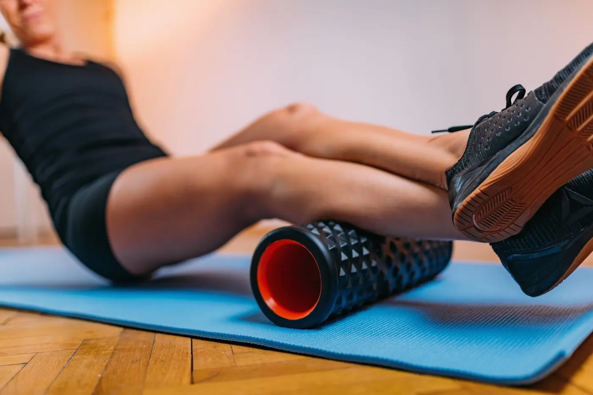
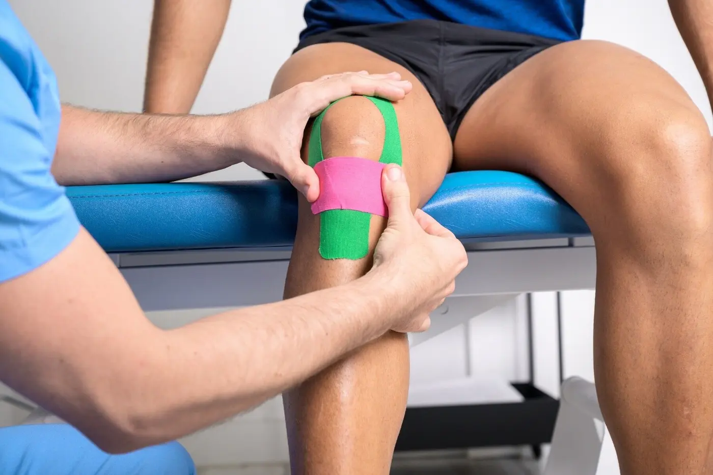
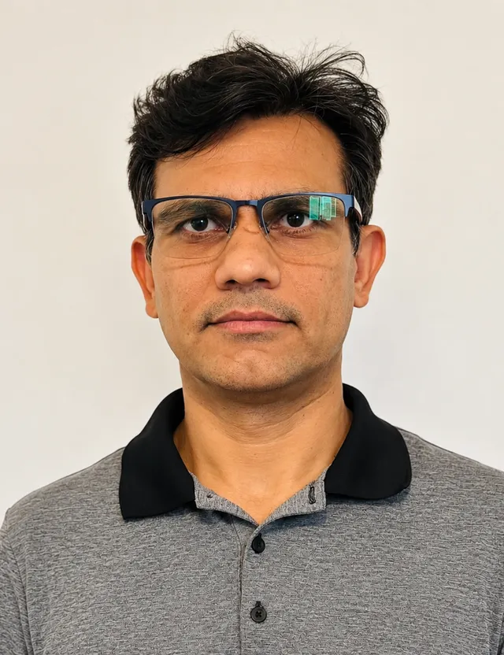
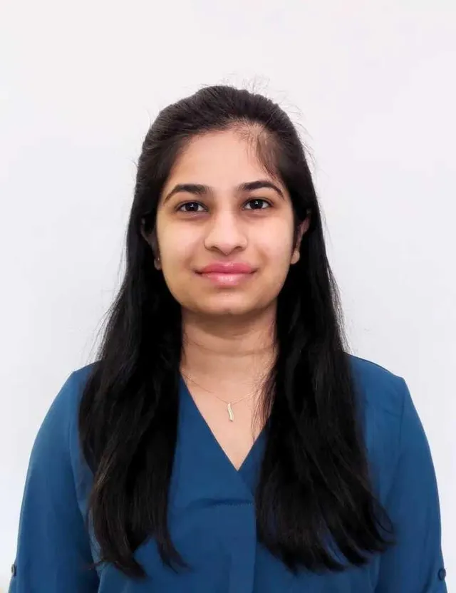

Now booking · Baseline & Craig Henry, Ottawa
Move better.
Feel better.
Personalized physiotherapy that gets you out of pain and back to the life you love.
- No referral needed
- Book online 24/7
- Two Ottawa clinics

Care for every body
Ten specialized treatments under one roof. Tap any card to learn more.


Born from a shared passion for holistic care
Senses started as a dream among friends: a place focused on your wellness. Your comfort and needs guide every step. We pair care and compassion with evidence-based treatment so you feel heard, understood and supported.
Personalized plans
Built around your goals, never a template.
Holistic approach
We treat the cause, not just the pain.
Convenient locations
Baseline and Craig Henry Plaza, Ottawa.
Three simple steps
Schedule your visit
Pick your clinic, clinician and time online in under a minute.
Get your plan
A thorough assessment, then a clear plan built around you.
Begin your journey
Treatment, exercise and guidance to recover and stay strong.
Meet your clinicians
Experienced, caring and always learning.
Honey Bodara

Kalpeshkumar Harkhani

Ritu Patel
Sweta Vaghasiya
Tonya Gartshore
Honey Bodara
Holds a bachelor's degree in Physiotherapy and a Diploma in Fitness and Health Promotion. Dedicated to continually building skills and helping people carry out daily activities within their functional capacity, and supporting healthy individuals in reaching their performance goals.
Clinic: Baseline · Craig Henry
Book with usKalpeshkumar Harkhani
Kumar is a Registered Physiotherapist with extensive clinical experience in Canada, committed to evidence-based, personalized treatment plans that help patients reach their rehabilitation goals.
He has treated arthritis, joint-replacement recovery, sciatica, frozen shoulder, tendinopathies, carpal tunnel, stroke, spinal cord injuries, spondylosis, TMJ and more, always treating the body as one connected system.
Bachelor of Physiotherapy (India, 2006) with advanced Canadian certifications in Acupuncture, Functional Dry Needling, Traditional Cupping, Kinesiology Taping, and Mulligan and McKenzie techniques.
Clinic: Baseline · Craig Henry
Book with usRitu Patel
Graduated with a Bachelor of Physiotherapy in 2016. Expertise in manual therapy, exercise prescription and comprehensive orthotics assessments, including compression stocking fittings, cupping and taping.
Her client-centred approach helps reduce pain and improve daily function, empowering clients to take an active part in their own self-management.
Clinic: Baseline
Book with usSweta Vaghasiya
Over six years of clinical experience in multi-specialty hospitals and rehabilitation settings. Experienced in orthopedic and neurological conditions, post-surgical rehab, chronic pain and neurorehabilitation.
Strong background in manual therapy, therapeutic exercise, postural correction and pediatric neurodevelopmental therapy. Her approach is patient-centred and evidence-based, with hands-on technique, movement therapy and education.
Clinic: Baseline
Book with usTonya Gartshore
Experienced Registered Massage Therapist with over 20 years in practice, working in Ottawa West for the past ten years. Graduate of Algonquin College's Massage Therapy Intensive program and Toronto's Shiatsu School of Canada diploma program.
Alongside Senses Physio, she also has her own practice, TG Massage Therapy, on Greenbank Rd.
Clinic: Baseline
Book with usWellness tips & clinic life on Instagram
Physio · Massage · Rehab. See what's new at Senses, from movement ideas to clinic updates.
- Trusted care since 2019
- 13+ years of clinical experience
- 55,000+ patients served
Quick answers
Do I need a referral for physiotherapy in Ottawa?
No. You can book directly online with a registered physiotherapist, no doctor's referral required. Some insurance plans have their own rules, so check yours.
How do I book an appointment?
Tap Book Now, choose your clinic and clinician, then pick a time. Booking is available online 24/7 through our secure booking system.
Where are your clinics?
Two Ottawa locations: Baseline (2944 Baseline Rd) and Craig Henry Plaza (3 Chartwell Ave).
What should I bring to my first visit?
Comfortable clothing, your health card, any imaging or reports, and your insurance details if you plan to claim.
What treatments do you offer?
Physiotherapy, acupuncture, laser therapy, exercise rehab, vestibular & balance therapy, TMJ therapy, cupping, spinal decompression, ConnecTherapy and osteopathy, plus massage therapy.
Two clinics, one team
Baseline
- 2944 Baseline Rd, Ottawa, ON K2H 7T3
- 613-829-7367
- Honey · Kumar · Ritu · Sweta · Tonya